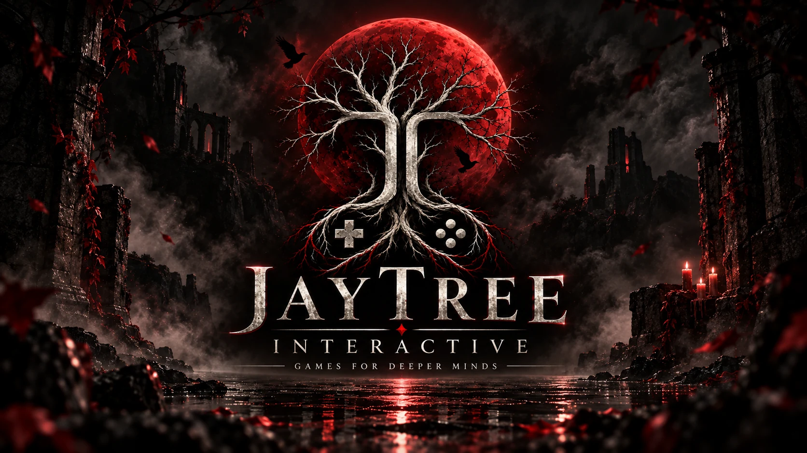

Behind the pages
Something new is taking shape.
New mysteries, trailers, reader guides, and case-file reveals—organized so you can explore without hunting through the homepage.
Explore the latest project areas
Follow your favorite story.
Manuscript updates
Three upcoming novels
Discover the next stories taking shape.
Explore →
On screen
Mystery stories in motion
Explore the cinematic and animated mystery experiences.
Explore →Reader notes
Explore the story mechanisms
Reading guides for cold cases, unreliable memories and psychological suspense.
Explore →More from JayTree
Take the mystery with you.
Watch original video work or find us on social channels for short-form clues and atmosphere.